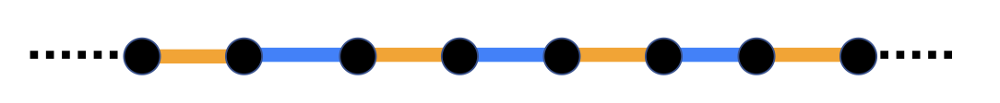

Stage 3: Trotterized evolution#
We’d like to use our UXYZGate and UXZGate to implement the
time evolution operator \(U(t) = e^{-i \mathcal{H}_S t}\) when \(n \geq 3\). However,
a fundamental issue arises: in this case the Hamiltonian contains non-commuting
terms.
Exercise 3.1
Use the binomial theorem to show that if \(A\) and \(B\) are commuting \(m \times m\) matrices then
In addition, show that this generally fails if \(A\) and \(B\) do not commute; that is, find two matrices \(A\), \(B\) such that \([A, B] \neq 0\) and
Note
In general, the Baker-Campbell-Hausdorff formula expresses the matrix \(Z\) such that \(e^A e^B = e^Z\) as a series in nested commutators of \(A\) and \(B\).
Recall that in Exercise 0.1 you showed that the spin interaction terms on adjacent sites do not commute. This means we cannot simply write the time propagator
as a product of block operators. Here \(H_j = {1 \over 2} \sum_{\alpha \in \{x, y, z\}} J_{\alpha} \, \sigma_j^\alpha \sigma_{j+1}^\alpha\) groups the terms in the Hamiltonian acting non-trivially on the \((j,j+1)\)-stsites.
However, the formula
holds for every \(A\) and \(B\), so we can truncate it to approximate \(U(t)\) as a product of our block operators. This is the Trotter-Suzuki approximation scheme.
Although we could Trotterize the evolution operator directly, we will obtain a shallower circuit once we identify two large commuting families of operators (as in the diagram below) and realizing the corresponding time propagators can be implemented (exactly) as a product of block operators. In particular, notice that spin interaction terms at “distant” sites commute.
{kind=link}
Exercise 3.2
Write \(\mathcal{H}_S = \mathcal{H}_{\mathrm{even}} + \mathcal{H}_{\mathrm{odd}}\) as a sum of even- and odd-indexed spin interaction terms.
Briefly explain why the summands in \(H_{\mathrm{even}}\) (\(H_{\mathrm{odd}}\)) pairwise commute; in other words, justify the following equalities:
with \(B_j\) acting as the block operator on the \((j, j+1)\)-st sites.
With this in mind, we apply the Trotter-Suzuki formula to approximate the time propagator
using \(n\) Trotter steps. This approximation results in a circuit comprised by alternating layers of block operators, as illustrated in the figure below (taken from Peng et al. [PGAG22]).
{kind=link}
Approximating the time propagator \(U(t)\) using alternating layers of block operators. Here \(\Delta t = t / n\)#
Exercise 3.3
What is the depth of the circuit illustrated above? Compare this to the depth of the circuit that directly Trotterizes
When an external magnetic field is present, i.e., when \(h \neq 0\), we approximate the time propagator \(U(t)\) as follows:
where \(R^z(\theta) = e^{-\frac{i\theta}{2} \sigma^z}\) denotes the single-qubit rotation about the \(z\)-axis. This means we add a layer of single-qubit rotations for every pair of alternating block operator layers.
Approximate QTD using layered circuits#
Now it’s your turn! Implement the private
XYZEvolutionCircuit._construct_evolution_qc() method defined in
src.xyz_evolution.py to construct a quantum circuit approximating
the spin chain’s QTD.
- class src.xyz_evolution.XYZEvolutionCircuit(num_qubits, coupling_const=None, magnetic_field=0, final_time=0, trotter_num=0, bound=True)[source]#
Bases:
QuantumCircuitA
QuantumCircuitthat implements time propagation under the action of a Heisenberg Hamiltonian.EXAMPLES:
>>> from src.xyz_evolution import XYZEvolutionCircuit >>> XYZEvolutionCircuit(4, [1, 1, 1], trotter_num=2).draw() ┌───────┐ ┌───────┐ q_0: ┤0 ├─────────┤0 ├───────── │ Uxyz │┌───────┐│ Uxyz │┌───────┐ q_1: ┤1 ├┤0 ├┤1 ├┤0 ├ ├───────┤│ Uxyz │├───────┤│ Uxyz │ q_2: ┤0 ├┤1 ├┤0 ├┤1 ├ │ Uxyz │└───────┘│ Uxyz │└───────┘ q_3: ┤1 ├─────────┤1 ├───────── └───────┘ └───────┘ >>> qc = XYZEvolutionCircuit(3, [1, 0, 1], magnetic_field=1, trotter_num=2, final_time=3) >>> qc.draw() ░ ┌─────────┐ ░ ┌──────┐ ░ ┌─────────┐ ░ ┌──────┐ q_0: ─░─┤ Rz(1.5) ├─░─┤0 ├─────────░─┤ Rz(1.5) ├─░─┤0 ├──────── ░ ├─────────┤ ░ │ Uxz │┌──────┐ ░ ├─────────┤ ░ │ Uxz │┌──────┐ q_1: ─░─┤ Rz(1.5) ├─░─┤1 ├┤0 ├─░─┤ Rz(1.5) ├─░─┤1 ├┤0 ├ ░ ├─────────┤ ░ └──────┘│ Uxz │ ░ ├─────────┤ ░ └──────┘│ Uxz │ q_2: ─░─┤ Rz(1.5) ├─░─────────┤1 ├─░─┤ Rz(1.5) ├─░─────────┤1 ├ ░ └─────────┘ ░ └──────┘ ░ └─────────┘ ░ └──────┘
- uxyz(thetax, thetay, thetaz, qubit1, qubit2)[source]#
Apply the parametrized
UXYZGateontoqubit1andqubit2.EXAMPLES:
>>> from src.xyz_evolution import XYZEvolutionCircuit >>> qc = XYZEvolutionCircuit(4) >>> _ = qc.uxyz(1, 2, 3, 1, 2) >>> qc.draw() q_0: ───────── ┌───────┐ q_1: ┤0 ├ │ Uxyz │ q_2: ┤1 ├ └───────┘ q_3: ─────────
- uxz(gamma, delta, qubit1, qubit2)[source]#
Apply the parametrized
UXZGateontoqubit1andqubit2.EXAMPLES:
>>> from src.xyz_evolution import XYZEvolutionCircuit >>> qc = XYZEvolutionCircuit(3) >>> _ = qc.uxz(1, 2, 0, 1) >>> _ = qc.uxz(1, 2, 1, 2) >>> qc.draw() ┌──────┐ q_0: ┤0 ├──────── │ Uxz │┌──────┐ q_1: ┤1 ├┤0 ├ └──────┘│ Uxz │ q_2: ────────┤1 ├ └──────┘